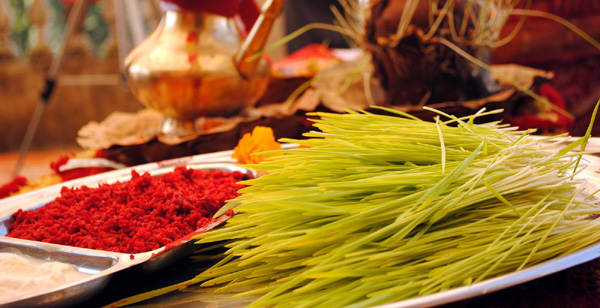
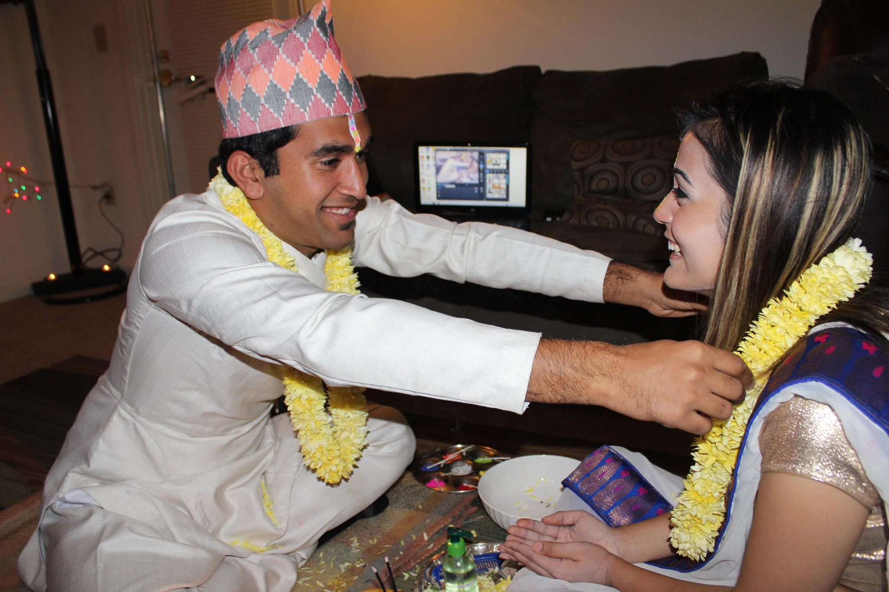
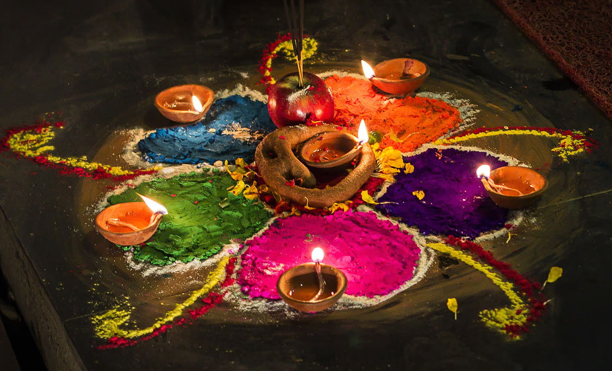
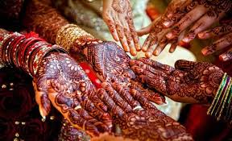

CULTURE





Images from left to right.
- Dashain is the longest and the most auspicious festival in the Bikram Sambat annual calendar, celebrated by Nepalese people, Lhotshampa, Burmese Gurkhas and Indian Gorkhas, along with their diaspora throughout the globe. It is the longest and most anticipated festival in Nepal, Bhutan, Burma and North Indian hills.
- Bhai-Tika is an extremely important festival for brothers and sisters all over Nepal and they celebrate the occasion with lot of enthusiasm and gaiety. On this day, sisters apply tilak on the forehead of their brothers and pray to Lord Yama, the God of death, for their brother’s long and prosperous life. Exchange of gifts besides lot of merriment marks the beautiful festival of Bhai Teeka. There is a popular legend behind the origination of Bhai Tika in Nepal. It says that long ago a sister saved the life of his brother from the clutches of Yamaraj (the God of death) by performing Bhai Tika. Since that time sisters have been applying tikka on their brothers forehead, in a belief that this will protect their brothers from death and they will enjoy a long life. Sisters also pray for their brothers health and prosperity on this day.
- Tihar , also known as Deepawali and Yamapanchak, is a five-day-long Hindu festival celebrated in Nepal and in the Indian states of Assam and Sikkim including in Darjeeling district of West Bengal. It is the festival of lights, as diyas are lit inside and outside the houses to make it illuminate at night. It is popularly known as Swanti among the Newars and as Deepawali among Madhesis. Set in the Vikram Samvat calendar, the festival begins with Kaag Tihar in Trayodashi of Kartik Krishna Paksha and ends with Bhai Tika in Dwitiya of Kartik Sukla Paksha every year.
- Teej has mainly two-fold: First, as a festival for women, Teej celebrates the victory of a wife's love and devotion towards her husband--an important tradition in Hinduism--symbolized by the union of Shiva and Parvati.Second, Teej ushers in the advent of the monsoons--the season of rains that brings a reason to celebrate as people can take a break from the sweltering heat and enjoy the swing of the monsoon--"Sawan ke jhooley." In addition, it's an occasion for married women to visit their parents and return with gifts for their in-laws and spouse. Teej, therefore, provides an opportunity to renew family bonds.